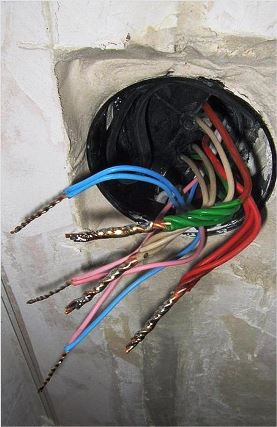

Качественный электромонтаж в Санкт-Петербурге и ленобласти, стаж 12 лет. Частный электрик, недорого и качественно.
Тел. 8 904 642 08 57 Николай.

Сервис по электромонтажу.
В последние десятилетия практически любое предприятие, офис и жилое помещение не могут обойтись без электропроводки. От качества сервиса электрика зависит не только эстетический вид помещения, но и пожарная и электрическая безопасность. Поэтому заказывать электромонтаж, сервис любого рода нужно только профессиональным электрикам.
Нашей частной ремонтно-строительной бригаде можно заказать проведение необходимых работ настоящему профессионалу своего дела, имеющему все нужные допуски и гарантирующему соблюдение действующих технических норм и правил. Лучшей рекламой нашего мастера является безупречная репутация, заработанная за многие годы у заказчиков города и области.
Сервис по электромонтажу в квартире.
Прокладка проводки в квартире, загородном доме, офисе, коммунальном учреждении или производственном цеху является одной из самых востребованных работ. Квалифицированный мастер выполнит электромонтаж, сервис включает в себя прокладку силовых, телефонных, телевизионных и других кабелей. Сопутствующая установка розеток, выключателей и разводных коробок тоже входит в перечень сервиса электрика.
При разводке электропроводки часто требуется монтаж электрических щитов. В старых зданиях нередко возникает необходимость в реконструкции устаревших электрощитов, от своевременного проведения которой зависит не только бесперебойная работа электрического оборудования, но и пожарная безопасность всего здания.
В обычных жилых квартирах и домах достаточно часто требуются услуги по подключения крупной бытовой техники. К примеру, комнатах со старой проводкой, рассчитанной на малые нагрузки, для стиральной машины, холодильника или другой мощной бытовой техники, потребуется отдельный ввод. Или замена силовых кабелей на отвечающие новым требованиям.
Сервис электрика.
Наш электрик легко выполнит монтаж осветительных приборов любой сложности, даст квалифицированные рекомендации по выбору, как основных источников света, так и декоративной подсветки. Любой электромонтажные работы качественно, в короткие сроки и за приемлемую цену.

Сколько будут стоить материалы.
Электромонтаж проводов в бане.
